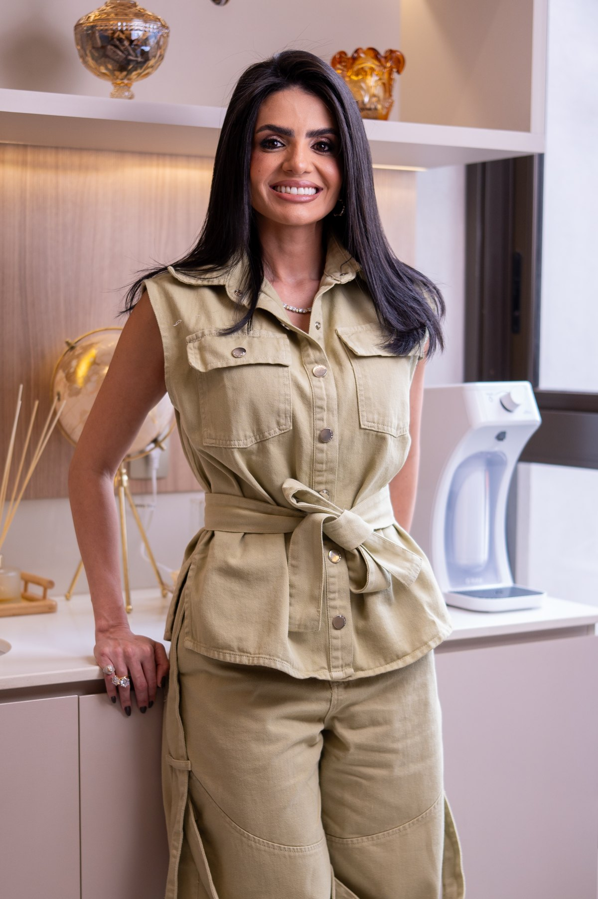

Vem aí · Novembro
Uma manhã para o corpo, o cuidado e a fé.
ELOLipedema
Aula funcional adaptada ao lipedema, o que pode e o que não pode no treino, e um momento de espiritualidade pra fechar. Sábado, 14 de novembro, no Condomínio Ventana. Inscrições em breve.
@larissamerola